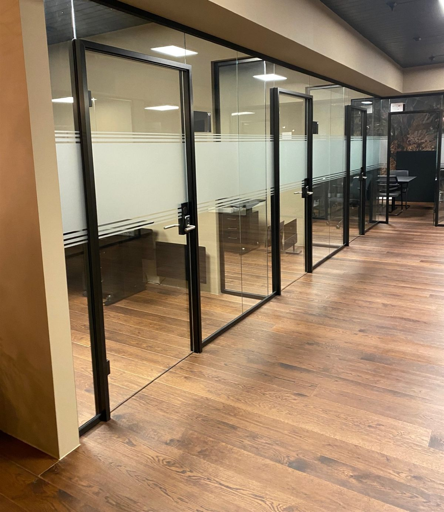
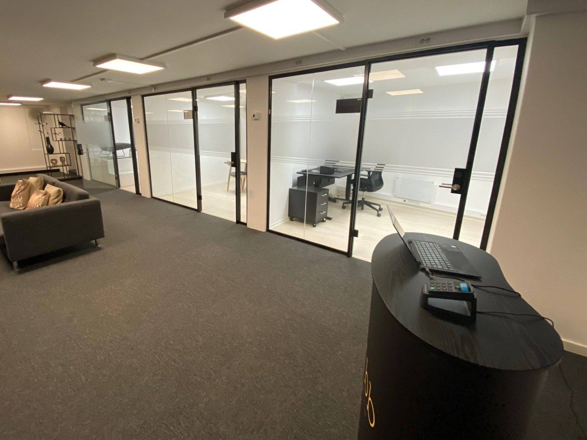

Ditt eget rom
Du leier et eget behandlingsrom og driver din egen salong der. Kundene er dine, og du bestemmer selv hvordan du jobber.
Vestre Gate 7, Arendal sentrum
Kribb Beauty er behandlingsrom til leie for deg som driver for deg selv som frisør, hudpleier eller negledesigner. Du får ditt eget rom til fast pris per måned, i et hus der flere selvstendige holder til under samme tak.

Du leier et eget behandlingsrom og driver din egen salong der. Kundene er dine, og du bestemmer selv hvordan du jobber.
En frisør og en hudpleier trenger helt forskjellige rom. Derfor rigger vi rommet i samråd med deg, slik at det passer behandlingene du gjør.
Du betaler en fast pris per måned, så du vet hva lokalet koster deg.
Kribb Beauty er et kollektiv av selvstendige. Du driver for deg selv, men du står ikke alene.
Kribb holder til i Vestre Gate 7, med inngang rett fra gaten og store vinduer ut mot fortauet. Lokalene går over to etasjer på cirka 170 kvadratmeter hver.

Vestre Gate 7 ligger midt i Arendal sentrum. Parkeringshuset P-Hus Vest ligger 50 meter unna, og det er cirka 100 meter til kjøpesenteret Alti. Det går mye folk forbi på vei mellom parkeringshuset og Alti, og det gir god synlighet for deg som holder til her.
Leier du stol i en salong i dag, med eget organisasjonsnummer? Da driver du allerede for deg selv, bare i andres lokaler. Hos Kribb Beauty får du ditt eget rom i sentrum, uten at du må lete opp og sette i stand et lokale på egen hånd.
Vi begynner med frisører, hudpleiere og negledesignere.
Ta kontakt med Kenneth, så tar vi en prat og en runde i lokalene.
Kenneth Grande